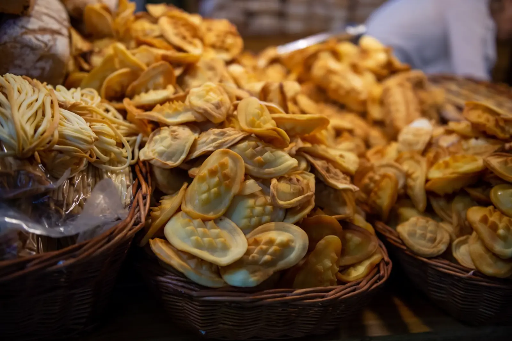

ARTYKUŁ • 14 października 2026
Kuchnia podhalańska — oscypek, kwaśnica i bryjka
Kuchnia Podhala to kuchnia pasterzy — gęsta, sycąca, oparta na mleku, serze, kapuście i ziemniakach. Sprawdź, co warto spróbować w górach — z konkretnymi bacówkami, karczmami i cenami.

Kuchnia podhalańska to kuchnia ludzi gór — pasterzy, którzy przez wieki wypasali owce na halach i żyli z tego, co dawała im góra. Dlatego jest to kuchnia prosta, gęsta i sycąca — oparta na mleku, serze, kapuście, ziemniakach i mięsie. Podhale to region, w którym pasterstwo ma tradycję sięgającą XIV wieku — Wołosi, koczowniczy lud pasterski, przynieśli tu owce i sery, a miejscowi górale przekształcili ten model w coś własnego: kulturę pasterską z własną muzyką, strojem, gwarą i — oczywiście — kuchnią. Do dziś w bacówkach na halach pracują bacy, którzy wypasają owce od maja do października i produkują oscypki, bundz i bryndzę metodą przekazywaną z ojca na syna.
Ten przewodnik pokazuje 6 dań, które trzeba spróbować na Podhalu, oraz konkretne miejsca — bacówki, karczmy i pensjonaty — gdzie zjesz je w wersji autentycznej, a nie turystycznej.
Sery pasterskie
1. Oscypek
Owczy ser wędzony — ikona Podhala i jedno z najbardziej rozpoznawalnych dań kuchni góralskiej. Formowany w charakterystyczne wrzeciona (dwa stożki połączone w środku), z wytłaczanym wzorem na powierzchni — najczęściej jest to rozeta, serce lub motyw góralski. Oscypek powstaje z mleka owczego, czasem z domieszką mleka krowiego (do 40%, zgodnie z unijną specyfikacją). Wpisany na listę produktów chronionych UE w 2007 roku — jako „oscypek” mogą być sprzedawane tylko sery wyprodukowane na Podhalu według tradycyjnej receptury. Oscypek jest solony w solance, formowany w drewnianych formach („oscypiorzach”) i wędzony w dymie jałowcowym przez kilka dni. Podaje się go na kilka sposobów: z grilla (z żurawiną), wędzony na zimno (z grzanym winem lub piwem), smażony na patelni z żurawiną. Najlepszy jest bezpośrednio od bacy, w bacówce na hali.
Cena: 8–15 zł za sztukę w bacówce, 15–25 zł za 500 g w sklepie, 20–35 zł za porcję w karczmie. Gdzie: Bacówka na Hali Gąsienicowej (Zakopane), Bacówka na Rusinowej Polanie (Bukowina Tatrzańska), Bacówka Pod Turbaczem (Gorce), Bacówka na Wielkiej Krokwi (Zakopane).
2. Bundz
Świeży ser owczy, nie wędzony — w przeciwieństwie do oscypka. Delikatny, lekko kwaśny, o miękkiej konsystencji — w smaku przypomina twaróg, ale ma wyraźny, owczy posmak. Bundz powstaje z mleka owczego podgrzewanego do ok. 40°C, bez dodatku podpuszczki — dlatego jest to ser „kwasowy”, a nie „słodki”. Idealny na kanapki z chrzanem lub miodem, a także jako dodatek do pierogów i klusek. Podaje się go w bacówkach przez cały sezon pasterski (od maja do października), a także w sklepach regionalnych na Podhalu. Z bundzu produkuje się też bryndzę — przez fermentację i ugniatanie w drewnianych beczkach.
Cena: 25–40 zł za 500 g w bacówce, 35–50 zł za 500 g w sklepie. Gdzie: Bacówka na Hali Gąsienicowej, Bacówka na Rusinowej Polanie, Oscypki u Bacy (Zakopane, ul. Krupówki 4).
Zupy i placki
3. Kwaśnica
Góralska zupa na kapuście kiszonej z dodatkiem mięsa — najczęściej żeberek lub boczku. Rozgrzewa od pierwszego łyka. Podaje się ją z chlebem i ziemniakami. Idealna po dniu w górach — zwłaszcza w chłodne dni. Kwaśnica to jedno z tych dań, które na Podhalu je się nie tylko w restauracjach, ale też w domach — przepis przekazywany z pokolenia na pokolenie różni się w każdej wsi, ale zawsze zawiera: kapustę kiszoną, żeberka lub boczek, cebulę, czosnek, majeranek i kminek. Niektóre wersje dodają też grzyby lub śliwki — dla zaokrąglenia smaku. Kwaśnica jest najbardziej „zimową” zupą Podhala — je się ją od października do marca, zwłaszcza po powrocie ze szlaku.
Cena: 15–25 zł za miskę. Gdzie: Karczma Zbójnicka (Zakopane, ul. Krupówki 22), Karczma Chochołowska (Zakopane, ul. Chochołowska 12), Karczma U Wnuka (Zakopane, ul. Kościeliska 8).
4. Moskole
Placki ziemniaczane pieczone na blasze (tradycyjnie na blasze pieca), często z dodatkiem mąki i jajek. Podaje się je na śniadanie lub jako dodatek do zup. W wersji góralskiej — z bryndzą, słoniną lub kwaśną śmietaną. Moskole różnią się od zwykłych placków ziemniaczanych tym, że są pieczone, a nie smażone — dzięki temu są bardziej miękkie i mniej tłuste. Ciasto przygotowuje się z tartych ziemniaków, mąki i jajek, formuje w grube placki i piecze na blasze lub patelni bez tłuszczu. Na Podhalu moskole podaje się też z żurem lub kwaśnicą — wtedy zastępują chleb. W bacówkach moskole piecze się na miejscu, na blasze pieca węglowego — są wtedy najbardziej autentyczne.
Cena: 15–25 zł za porcję. Gdzie: Karczma Zbójnicka (Zakopane), Karczma U Wnuka (Zakopane), Bacówka na Hali Gąsienicowej.
5. Bryjka
Potrawa z mąki kukurydzianej, gotowana na wodzie lub mleku. Podaje się ją z żurawiną, masłem lub skwarkami. W wersji tradycyjnej — na słono, z bryndzą. W wersji nowoczesnej — na słodko, z owocami. Bryjka to jedno z tych dań, które przyszły na Podhale z Węgier (podobne danie — puliszka — je się na Węgrzech i Słowacji). Na Podhalu bryjka ma swoją specyfikę: jest bardziej gęsta i podawana z bryndzą, masłem i skwarkami — jako danie obiadowe, a nie deser. W wersji słodkiej dodaje się do niej cukier, cynamon i owoce — wtedy staje się deserem. Bryjka jest tania i sycąca — przez wieki była podstawą wyżywienia pasterzy w górach, dziś jest jednym z najbardziej rozpoznawalnych dań kuchni podhalańskiej.
Cena: 15–25 zł za porcję. Gdzie: Karczma Zbójnicka (Zakopane), Karczma Chochołowska (Zakopane), Restauracja Pod Gubałówką (Zakopane, ul. Krupówki 63).
Mięso
6. Pieczone jagnię
Tradycyjne danie wielkanocne na Podhalu. Jagnię pieczone z ziołami, czosnkiem i majerankiem, podawane z ziemniakami i kapustą. W wersji góralskiej — z dodatkiem wędzonej słoniny i jałowca, które nadają mięsu głęboki, dymny aromat. Jagnięcina to mięso, które na Podhalu je się przede wszystkim na Wielkanoc — ale też na innych uroczystościach rodzinnych, zwłaszcza weselach i chrzcinach. Mięso jest wolno pieczone (4–6 godzin) w piecu lub na ruszcie, aż staje się miękkie i aromatyczne. W wersji bacowskiej jagnię piecze się w całości, nad ogniem, i podaje z ziemniakami z wody i kapustą kiszoną. W wersji restauracyjnej — porcjowane, z sosem z jałowca i pieczonymi ziemniakami.
Cena: 60–100 zł za porcję w karczmie, 200–400 zł za całe jagnię na zamówienie. Gdzie: Karczma Zbójnicka (Zakopane), Karczma Chochołowska (Zakopane), Karczma U Wnuka (Zakopane), Restauracja Pod Gubałówką (Zakopane).
Gdzie jeść — konkretne miejsca
Zakopane i okolice:
- Karczma Zbójnicka (ul. Krupówki 22) — klasyk kuchni góralskiej, kwaśnica, moskole, jagnię.
- Karczma Chochołowska (ul. Chochołowska 12) — domowa kuchnia podhalańska, oscypki, bryjka.
- Karczma U Wnuka (ul. Kościeliska 8) — jedna z najstarszych karczm w Zakopanem, kwaśnica, moskole, jagnię.
- Restauracja Pod Gubałówką (ul. Krupówki 63) — kuchnia góralska w wersji eleganckiej.
Bacówki na halach (sery i żętyca):
- Bacówka na Hali Gąsienicowej — oscypki, bundz, żętyca prosto od bacy. Punkt startowy: Kuźnice (Zakopane).
- Bacówka na Rusinowej Polanie — oscypki, bundz, bryndza. Punkt startowy: Bukowina Tatrzańska.
- Bacówka na Wielkiej Krokwi — oscypki, żętyca, widok na Tatry.
- Bacówka Pod Turbaczem (Gorce) — oscypki, bundz, kwaśnica w wersji schroniskowej.
Pensjonaty i agroturystyki (domowa kuchnia):
- Pensjonat U Bacy (Bukowina Tatrzańska, ul. Kościuszki 12) — kuchnia góralska w wersji domowej.
- Agroturystyka Pod Tatrami (Białka Tatrzańska, ul. Środkowa 8) — kwaśnica, moskole, jagnię z pieca.
- Pensjonat Góralski Dwór (Kościelisko, ul. Nędzy Kubińca 21) — domowa kuchnia podhalańska, oscypki z własnej bacówki.
Praktyczne wskazówki
- Oscypki kupuj w bacówkach, nie w sklepach na Krupówkach — w bacówkach są tańsze i prawdziwe, w sklepach turystycznych często sprzedaje się podróbki (nawet jeśli mają unijną nazwę).
- Żętyca to serwatka z mleka owczego — warto jej spróbować w bacówce, ale smakuje specyficznie (kwaśno, słono). Tradycyjnie pije się ją na zdrowie.
- Kwaśnica najlepsza jest w karczmach poza centrum Zakopanego — w Krupówkach bywa „turystyczna”, z mniejszą ilością mięsa i kapusty.
- Sezon pasterski trwa od maja do października — wtedy bacówki są czynne i można kupić świeże sery. Poza sezonem pozostają sklepy regionalne, ale wybór jest mniejszy.
- Pieczone jagnię w karczmach podaje się głównie w okresie wielkanocnym — poza sezonem warto pytać wcześniej, czy karczma ma je w menu.
- Moskole w wersji autentycznej piecze się na blasze — jeśli w karczmie są smażone na patelni, to już nie do końca tradycyjne. Warto pytać, jak są przygotowywane.
Podsumowanie
Kuchnia podhalańska to kuchnia pasterzy — prosta, gęsta i sycąca. Zamiast wymyślnych dań znajdziesz tu klasykę: oscypki, bundz, kwaśnicę, moskole, bryjkę i pieczone jagnię. Warto zaplanować wyjazd na Podhale tak, żeby spróbować przynajmniej czterech z sześciu dań — a najlepiej zjeść je w bacówkach na halach i karczmach poza Krupówkami, gdzie kuchnia jest wciąż domowa, a nie turystyczna. Jeśli lubisz górskie klimaty, sprawdź też nasze strony o kuchni małopolskiej i o Podhalu jako kierunku — tam znajdziesz więcej o samej kulturze góralskiej i miejscach, które warto odwiedzić.